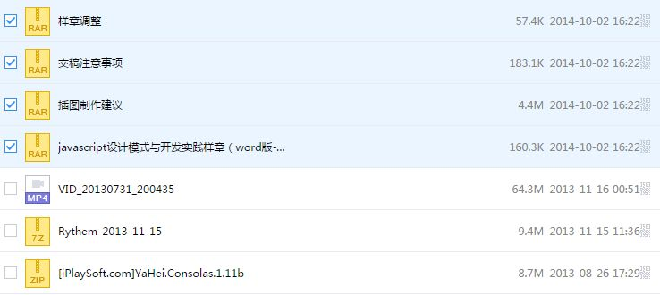

先想象这样一个场景：每周我们都要写一份工作周报，周报要交给总监批阅。总监手下管理着150个员工，如果我们每个人直接把周报发给总监，那总监可能要把一整周的时间都花在查看邮件上面。
现在我们把周报发给各自的组长，组长作为代理，把组内成员的周报合并提炼成一份后一次性地发给总监。这样一来，总监的邮箱便清净多了。
这个例子在程序世界里很容易引起共鸣，在Web开发中，也许最大的开销就是网络请求。假设我们在做一个文件同步的功能，当我们选中一个checkbox的时候，它对应的文件就会被同步到另外一台备用服务器上面，如图6-3所示。

图 6-3
我们先在页面中放置好这些checkbox节点：
<body>
<input type="checkbox" id="1"></input>1
<input type="checkbox" id="2"></input>2
<input type="checkbox" id="3"></input>3
<input type="checkbox" id="4"></input>4
<input type="checkbox" id="5"></input>5
<input type="checkbox" id="6"></input>6
<input type="checkbox" id="7"></input>7
<input type="checkbox" id="8"></input>8
<input type="checkbox" id="9"></input>9
</body>
接下来，给这些checkbox绑定点击事件，并且在点击的同时往另一台服务器同步文件：
var synchronousFile = function( id ){
console.log( '开始同步文件，id为: ' + id );
};
var checkbox = document.getElementsByTagName( 'input' );
for ( var i = 0, c; c = checkbox[ i++ ]; ){
c.onclick = function(){
if ( this.checked === true ){
synchronousFile( this.id );
}
}
};
当我们选中3个checkbox的时候，依次往服务器发送了3次同步文件的请求。而点击一个checkbox并不是很复杂的操作，作为APM250+的资深Dota玩家，我有把握一秒钟之内点中4个checkbox。可以预见，如此频繁的网络请求将会带来相当大的开销。
解决方案是，我们可以通过一个代理函数proxySynchronousFile来收集一段时间之内的请求，最后一次性发送给服务器。比如我们等待2秒之后才把这2秒之内需要同步的文件ID打包发给服务器，如果不是对实时性要求非常高的系统，2秒的延迟不会带来太大副作用，却能大大减轻服务器的压力。代码如下：
var synchronousFile = function( id ){
console.log( '开始同步文件，id为: ' + id );
};
var proxySynchronousFile = (function(){
var cache = [], // 保存一段时间内需要同步的ID
timer; // 定时器
return function( id ){
cache.push( id );
if ( timer ){ // 保证不会覆盖已经启动的定时器
return;
}
timer = setTimeout(function(){
synchronousFile( cache.join( ',' ) ); // 2秒后向本体发送需要同步的ID集合
clearTimeout( timer ); // 清空定时器
timer = null;
cache.length = 0; // 清空ID集合
}, 2000 );
}
})();
var checkbox = document.getElementsByTagName( 'input' );
for ( var i = 0, c; c = checkbox[ i++ ]; ){
c.onclick = function(){
if ( this.checked === true ){
proxySynchronousFile( this.id );
}
}
};